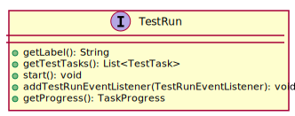

public interface TestRun extends Task<TestRunDto>
TaskPoolRegistry.submitTask(Task)).
TaskState.STATE| Modifier and Type | Method and Description |
|---|---|
void |
addTestRunEventListener(TestRunEventListener testRunEventListener) |
java.lang.String |
getLabel() |
TaskProgress |
getProgress() |
java.util.List<TestTask> |
getTestTasks() |
void |
start() |
getId, getResult, setFuture, waitForResultjava.lang.String getLabel()
java.util.List<TestTask> getTestTasks()
void start()
throws de.interactive_instruments.exceptions.config.ConfigurationException,
de.interactive_instruments.exceptions.InvalidStateTransitionException,
de.interactive_instruments.exceptions.InitializationException,
java.lang.Exception
de.interactive_instruments.exceptions.config.ConfigurationExceptionde.interactive_instruments.exceptions.InvalidStateTransitionExceptionde.interactive_instruments.exceptions.InitializationExceptionjava.lang.Exceptionvoid addTestRunEventListener(TestRunEventListener testRunEventListener)
TaskProgress getProgress()